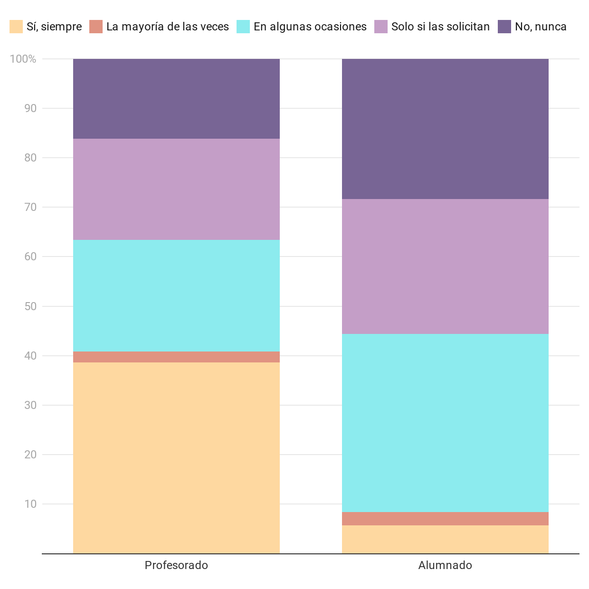
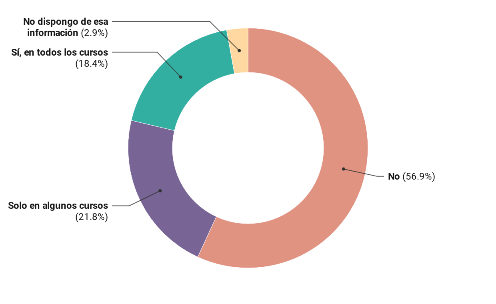
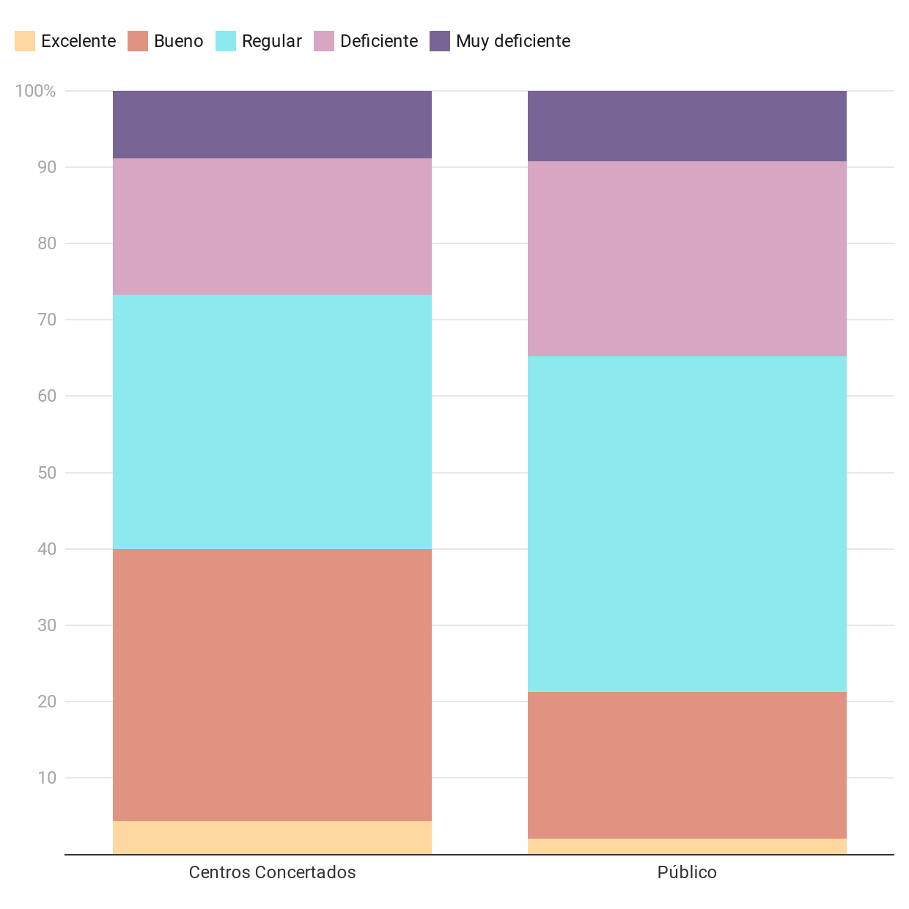
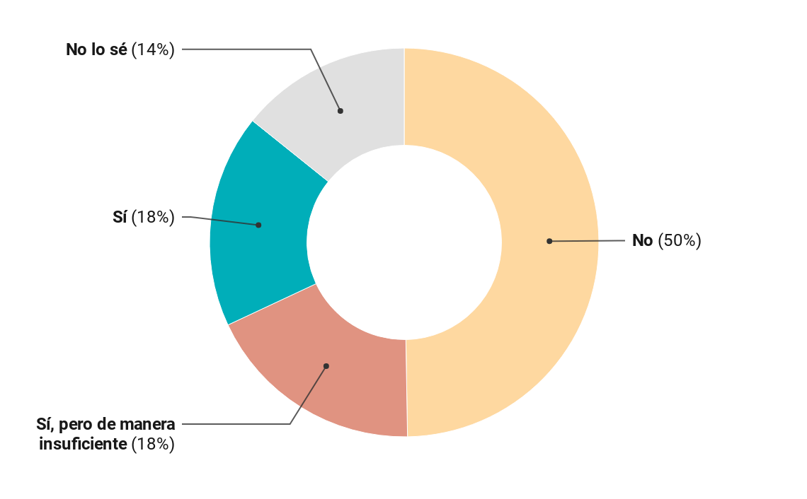
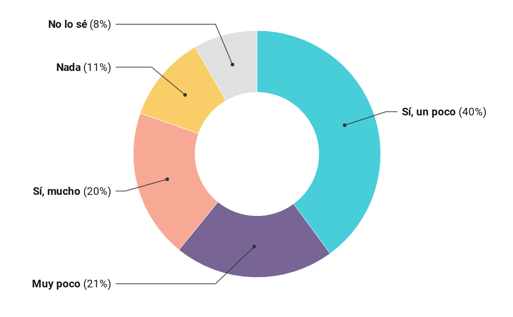
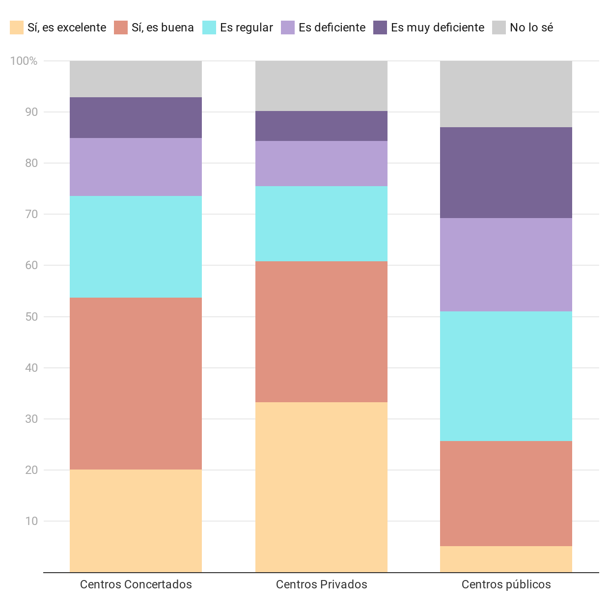

| Comunidades y ciudades autónomas | Recursos del Fondo COVID-19 | Inversión identificada relacionada con la COVID-19 | Recursos del Programa PROA + (20-21) | Recursos del Programa Educa en Digital | Gasto público en educación por CCAA |
|---|---|---|---|---|---|
| Andalucía | 383.856.980,00 € | 591.139.309,95 € | 7.991.991,00 € | 100.000.000,00 € | 8.105.710.000,00 € |
| Aragón | 53.448.020,00 € | 26.743.453,46 € | 2.609.636,00 € | 6.500.000,00 € | 1.219.199.000,00 € |
| Asturias | 32.529.930,00 € | 37.821.381,43 € | 2.321.215,00 € | 1.734.837,75 € | 830.903.000,00 € |
| Illes Balears | 50.280.260,00 € | 51.149.699,46 € | 3.003.911,00 € | 2.028.867,85 € | 955.167.000,00 € |
| Canarias | 87.368.300,00 € | 65.880.123,67 € | 2.937.018,00 € | 10.587.820,15 € | 1.698.521.000,00 € |
| Cantabria | 22.141.310,00 € | 21.868.219,20 € | 2.178.705,00 € | 1.575.000,00 € | 588.723.000,00 € |
| Castilla - La Mancha | 89.185.600,00 € | 168.557.898,62 € | 3.220.279,00 € | 10.041.119,10 € | 1.700.148.000,00 € |
| Castilla y León | 84.043.550,00 € | 64.482.595,41 € | 3.213.376,00 € | 4.345.002,45 € | 2.182.941.000,00 € |
| Cataluña | 337.438.190,00 € | 337.400.000,00 € | 6.793.201,00 € | 21.078.390,00 € | 6.653.436.000,00 € |
| Ceuta | 7.000.000,00 € | 9.106.640,62 € | ― | ― | 10.179.800,0 €0 |
| Comunitat Valenciana | 214.185.030,00 € | 267.065.140,04 € | 5.279.464,00 € | 26.366.165,70 € | 4.654.896.000,00 € |
| Extremadura | 43.295.390,00 € | 43.297.000,00 € | 2.500.241,00 € | 8.605.878,00 € | 1.064.100.000,00 € |
| Galicia | 92.987.530,00 € | 164.366.329,45 € | 3.553.748,00 € | 8.598.356,45 € | 2.442.203.000,00 € |
| La Rioja | 13.204.990,00 € | 18.668.884,38 € | 2.369.942,00 € | 679.865,00 € | 290.416.000,00 € |
| Madrid | 291.696.570,00 € | 305.844.689,67 € | 5.673.052,00 € | 13.707.051,95 € | 5.166.939.000,00 € |
| Melilla | 7.000.000,00 € | 6.954.795,67 € | ― | ― | 15.566.200,00 € |
| Murcia | 73.820.120,00 € | 79.809.873,48 € | 3.314.291,00 € | 7.010.135,00 € | 1.426.659.000,00 € |
| Navarra | 29.287.530,00 € | 44.753.471,57 € | 3.039.930,00 € | 1.513.545,35 € | 675.027.000,00 € |
| País Vasco * | 87.230.700,00 € | 127.536.654,57 € | ― | 3.953.648,20 € | 2.762.043.000,00 € |
* Los recursos para País Vasco derivados del programa PROA + (2020-2021) se determina de conformidad con su régimen específico y no se ha tenido acceso a la cuantía acordada.
Los principales rasgos comunes a destacar son: que en la totalidad de territorios la principal categoría de gasto es el Personal docente; que en 6 de los territorios la educación digital se encuentra entre las 3 principales categorías de gasto y que dos categorías (Materiales y Transporte) no han recibido ningún fondo por parte de 17 de los 19 territorios analizados.
¿El centro proporciona mascarillas para el personal y el alumnado? Respuestas de la Comunidad Educativa
¿Se ha reducido el número de alumnos por grupo respecto al año anterior? Respuestas de la Comunidad Educativa
¿Cómo calificarías el funcionamiento de la educación semipresencial? Respuestas de la Comunidad Educativa
¿Consideras que la Comunidad educativa ha podido participar en las decisiones que se han tomado? Respuestas de la ciudadanía.
¿Consideras que las medidas que se han tomado pueden impactar negativamente en la salud mental y en el bienestar emocional de los niños y niñas? Respuestas de la ciudadanía
¿Consideras que la educación digital en tu centro es de calidad? Respuestas de la ciudadanía
